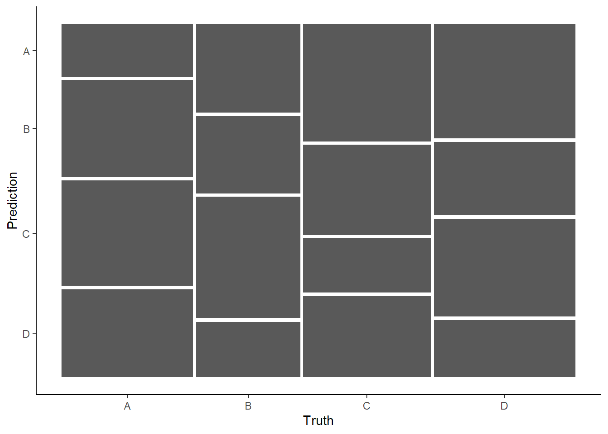
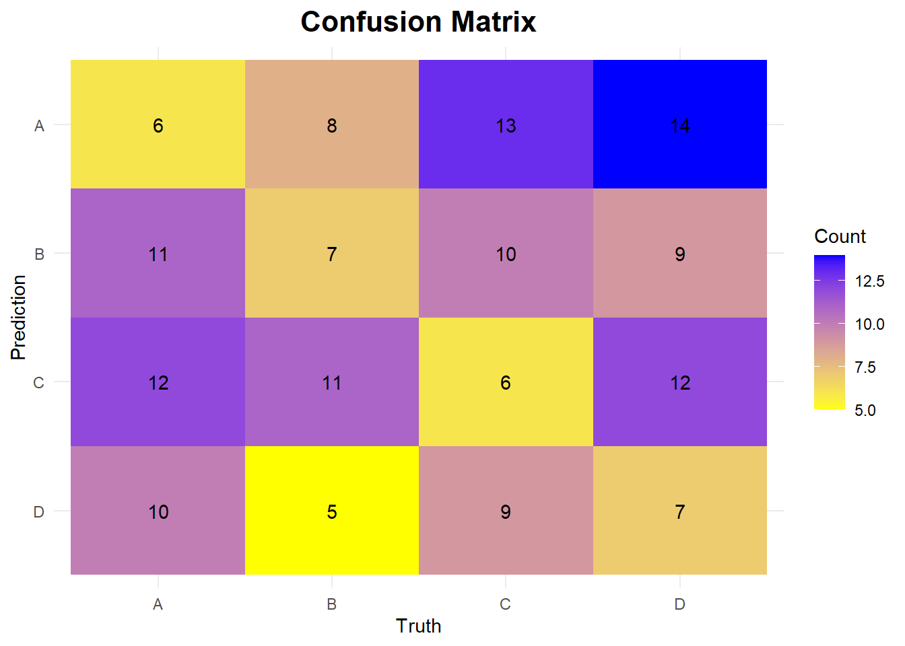
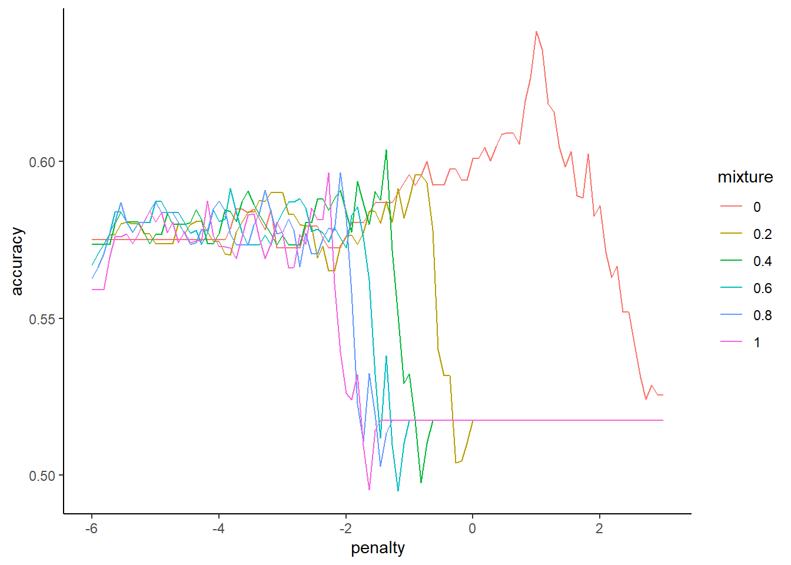
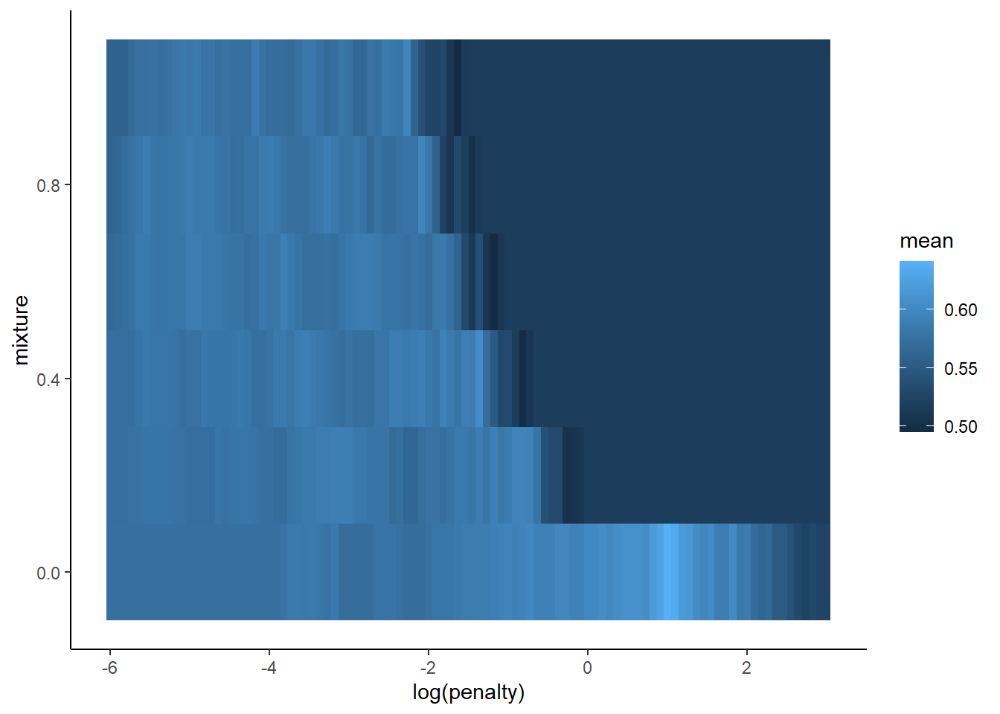
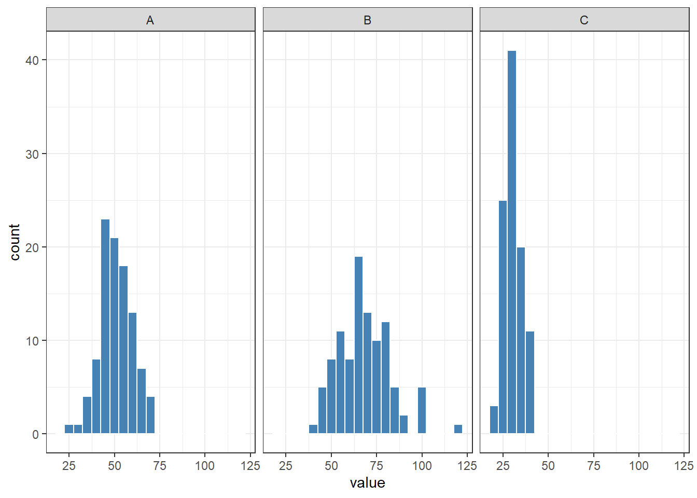

options(conflicts.policy = "depends.ok")
devtools::source_url("https://github.com/jjcurtin/lab_support/blob/main/fun_ml.R?raw=true")ℹ SHA-1 hash of file is "77e91675366f10788c6bcb59fa1cfc9ee0c75281"tidymodels_conflictRules()options(conflicts.policy = "depends.ok")
devtools::source_url("https://github.com/jjcurtin/lab_support/blob/main/fun_ml.R?raw=true")ℹ SHA-1 hash of file is "77e91675366f10788c6bcb59fa1cfc9ee0c75281"tidymodels_conflictRules()library(tidyverse) ── Attaching core tidyverse packages ──────────────────────── tidyverse 2.0.0 ──
✔ dplyr 1.1.4 ✔ readr 2.1.5
✔ forcats 1.0.0 ✔ stringr 1.5.1
✔ ggplot2 3.5.1 ✔ tibble 3.2.1
✔ lubridate 1.9.4 ✔ tidyr 1.3.1
✔ purrr 1.0.2
── Conflicts ────────────────────────────────────────── tidyverse_conflicts() ──
✖ dplyr::filter() masks stats::filter()
✖ dplyr::lag() masks stats::lag()
ℹ Use the conflicted package (<http://conflicted.r-lib.org/>) to force all conflicts to become errorslibrary(tidymodels)── Attaching packages ────────────────────────────────────── tidymodels 1.2.0 ──
✔ broom 1.0.7 ✔ rsample 1.2.1
✔ dials 1.3.0 ✔ tune 1.2.1
✔ infer 1.0.7 ✔ workflows 1.1.4
✔ modeldata 1.4.0 ✔ workflowsets 1.1.0
✔ parsnip 1.2.1 ✔ yardstick 1.3.2
✔ recipes 1.1.0
── Conflicts ───────────────────────────────────────── tidymodels_conflicts() ──
✖ scales::discard() masks purrr::discard()
✖ dplyr::filter() masks stats::filter()
✖ recipes::fixed() masks stringr::fixed()
✖ dplyr::lag() masks stats::lag()
✖ yardstick::spec() masks readr::spec()
✖ recipes::step() masks stats::step()
• Dig deeper into tidy modeling with R at https://www.tmwr.orglibrary(ggplot2)
library(xfun, include.only = "cache_rds")
devtools::source_url("https://github.com/jjcurtin/lab_support/blob/main/fun_plots.R?raw=true")ℹ SHA-1 hash of file is "def6ce26ed7b2493931fde811adff9287ee8d874"devtools::source_url("https://github.com/jjcurtin/lab_support/blob/main/fun_eda.R?raw=true")ℹ SHA-1 hash of file is "c045eee2655a18dc85e715b78182f176327358a7"theme_set(theme_classic())
options(tibble.width = Inf, dplyr.print_max=Inf)autoplotautoplot for simple plotting of appropriate data type?autoplotHelp on topic 'autoplot' was found in the following packages:
Package Library
tune C:/Users/Patron/AppData/Local/R/win-library/4.4
ggplot2 C:/Users/Patron/AppData/Local/R/win-library/4.4
workflowsets C:/Users/Patron/AppData/Local/R/win-library/4.4
parsnip C:/Users/Patron/AppData/Local/R/win-library/4.4
Using the first match ...# in ggplot2
# autoplot: Create a complete ggplot appropriate to a particular data type# Sample multi-class data
set.seed(421)
df <- tibble(
truth = factor(sample(c("A", "B", "C", "D"), 150, replace = TRUE)), # True Labels
predicted = factor(sample(c("A", "B", "C", "D"), 150, replace = TRUE)) # Model Predictions
)
# Compute confusion matrix
cm <- conf_mat(df, truth, predicted)
# Default autoplot
autoplot(cm)
We can modify the color, label and fonts, etc.
autoplot(cm, type = "heatmap") +
scale_fill_gradient(low = "yellow", high = "blue") + # Custom color scale
theme_minimal() +
labs(title = "Confusion Matrix",
fill = "Count") + # Adjust labels
theme(plot.title = element_text(hjust = 0.5, size = 16, face = "bold"))Scale for fill is already present.
Adding another scale for fill, which will replace the existing scale.
John’s function to plot the performance as y, a hyperparamter as the x and another hyperparameter as colorful curves could provide an overall trend of the perforamance when tuning the hyperparameters.
Another choice might be using a heatmap.
# create a fake df
set.seed(123) # Ensure reproducibility
# Generate a fake dataset
n <- 100 # Number of samples
p <- 20 # Number of features
# Generate informative features (correlated with outcome)
X <- as.data.frame(matrix(rnorm(n * p), nrow = n, ncol = p))
colnames(X) <- paste0("V", 1:p) # Assign column names
# Create a linear combination of some features as the signal
signal <- 0.8 * X$V1 + 0.6 * X$V2 - 0.5 * X$V3 + 0.4 * X$V4
# Generate probabilities using logistic function
prob <- 1 / (1 + exp(-signal)) # Sigmoid function
# Assign binary labels based on probability
y <- rbinom(n, 1, prob) |>
as.factor()
# Combine into a dataframe
df <- cbind(X, y = y)
# Print first few rows
head(df) V1 V2 V3 V4 V5 V6
1 -0.56047565 -0.71040656 2.1988103 -0.7152422 -0.07355602 -0.60189285
2 -0.23017749 0.25688371 1.3124130 -0.7526890 -1.16865142 -0.99369859
3 1.55870831 -0.24669188 -0.2651451 -0.9385387 -0.63474826 1.02678506
4 0.07050839 -0.34754260 0.5431941 -1.0525133 -0.02884155 0.75106130
5 0.12928774 -0.95161857 -0.4143399 -0.4371595 0.67069597 -1.50916654
6 1.71506499 -0.04502772 -0.4762469 0.3311792 -1.65054654 -0.09514745
V7 V8 V9 V10 V11 V12
1 1.07401226 -0.7282191 0.3562833 -1.0141142 -0.99579872 0.9159921
2 -0.02734697 -1.5404424 -0.6580102 -0.7913139 -1.03995504 0.8006224
3 -0.03333034 -0.6930946 0.8552022 0.2995937 -0.01798024 -0.9365690
4 -1.51606762 0.1188494 1.1529362 1.6390519 -0.13217513 -1.4007874
5 0.79038534 -1.3647095 0.2762746 1.0846170 -2.54934277 0.1602775
6 -0.21073418 0.5899827 0.1441047 -0.6245675 1.04057346 -0.2739624
V13 V14 V15 V16 V17 V18 V19
1 0.6198501 -0.7497258 -1.0861182 -0.8209867 -0.2890233 -0.1925602 -1.2893642
2 -0.7575102 -0.3216061 -0.6653028 -0.3072572 0.6565134 -0.4697965 -0.6545686
3 0.8515247 -1.1477708 0.7148484 -0.9020980 -0.4539977 -3.0478609 -0.0573241
4 -0.7479300 0.3543522 -0.4316611 0.6270687 -0.5938646 1.8686555 1.2567478
5 0.6302398 0.4247998 0.2276149 1.1203550 -1.7103797 1.7904242 1.5874541
6 1.0966616 0.6483474 1.2949458 2.1272136 -0.2094484 -1.1010817 0.3194815
V20 y
1 1.53732754 0
2 -0.45577106 1
3 -0.03265845 1
4 1.63675735 1
5 -0.32904197 0
6 -2.60403817 1set.seed(12345)
splits_test <- df |>
initial_split(prop = 3/4, strata = "y")
d_trn <- splits_test |>
analysis()
d_test <- splits_test |>
assessment()# set up resampling and hp grid
set.seed(12345)
splits_boot <- d_trn |>
bootstraps(times = 10, strata = "y")
grid_glmnet <- expand_grid(penalty = exp(seq(-6, 3, length.out = 100)),
mixture = seq(0, 1, length.out = 6))rec <- recipe(y ~ ., data = d_trn)
fits_glmnet <- cache_rds(
expr = {
logistic_reg(penalty = tune(),
mixture = tune()) |>
set_engine("glmnet") |>
set_mode("classification") |>
tune_grid(preprocessor = rec,
resamples = splits_boot, grid = grid_glmnet,
metrics = metric_set(accuracy))
},
dir = "cache/",
file = "fits_glmnet_lab_8",
rerun = F)plot_hyperparameters(fits_glmnet, hp1 = "penalty", hp2 = "mixture",
metric = "accuracy", log_hp1 = TRUE)
metric_data <- tune::collect_metrics(fits_glmnet)
metric_data |>
ggplot(aes(x = log(penalty), y = mixture, fill = mean)) +
geom_tile() +
scale_fill_gradient()
# Create a fake dataset
set.seed(123)
df <- data.frame(
category = rep(c("A", "B", "C"), each = 100),
value = c(rnorm(100, mean = 50, sd = 10),
rnorm(100, mean = 70, sd = 15),
rnorm(100, mean = 30, sd = 5))
)
# Plot histograms with facet_wrap()
ggplot(df, aes(x = value)) +
geom_histogram(binwidth = 5, fill = "steelblue", color = "white") +
facet_wrap(~ category) +
theme_bw()
# define a function
demo_fun <- function(x = 10, y = 10){
# some operations on the inputs
z1 <- x * y
z2 <- x + y
# return outputs
return(c(z1, z2))
}demo_fun()[1] 100 20# 100 20
demo_fun(5, 5)[1] 25 10# 25 10Maybe load the conflict rule polices before loading any packages.
expand_grid function. What does it mean to have seq(-8, 3, length.out = 200)?This means to generate a sequence from -8 to 3, including 200 values between them.
?seqHelp on topic 'seq' was found in the following packages:
Package Library
timeDate C:/Users/Patron/AppData/Local/R/win-library/4.4
base C:/PROGRA~1/R/R-44~1.2/library
Using the first match ...# ## Default S3 method:
# seq(from = 1, to = 1, by = ((to - from)/(length.out - 1)), length.out = NULL, along.with = NULL, ...)
# length.out
# desired length of the sequence. A non-negative number, which for seq and seq.int will be rounded up if fractional.It means the ratio of the #majority/#minority
?themis::step_downsample
# under_ratio
# A numeric value for the ratio of the majority-to-minority frequencies.
# The default value (1) means that all other levels are sampled down to have the same frequency as the least occurring level.
# A value of 2 would mean that the majority levels will have (at most) (approximately) twice as many rows than the minority level.?themis::step_upsample
# over_ratio
# A numeric value for the ratio of the minority-to-majority frequencies.
# The default value (1) means that all other levels are sampled up to have the same frequency as the most occurring level.
# A value of 0.5 would mean that the minority levels will have (at most) (approximately) half as many rows than the majority level.We use them in the recipe by calling
themis::step_upsampleorthemis::step_downsample
We randomly remove/sample from existing instances of the majority/minority class. And the order is intended to maintain the pattern of the original data, such as the overall status of the distribution of the feature values.
It’s a special upsampling for minority class, where the upsampled instances are synthesized from the feature values limited by the existing instances.
Only prepare the recipe with trianing data.
Check out the key.
roc_plot <-
tibble(truth = feat_test$diagnosis,
prob = predict(fit_best_knn, feat_test, type = "prob")$.pred_malignant) |>
roc_curve(prob, truth = truth)
roc_plot |>
ggplot(aes(x = 1 - specificity, y = sensitivity, color = .threshold)) +
geom_path() +
geom_abline(lty = 3) +
coord_equal() +
labs(x = "1 - Specificity (FPR)",
y = "Sensitivity (TPR)")In the dataframe,
truthrefers to the ground truth, andprobrefers to the probability of the prediction to be positive. We pipes it into roc_curve to compute specificity and sensitivity.
The ROC provides a more formal method to visualize the trade-offs between sensitivity and specificity across all possible thresholds for classification.
auROC is the probability that the classifier will rank/predict a randomly selected true positive observation higher than a randomly selected true negative observation. Alternatively, it can be thought of as the average sensitivity across all decision thresholds. It summarizes performance (sensitivity vs. specificity trade-off) across all possible thresholds and is not affected by class imbalances in contrast to many other metrics.
metrics = metric_set(roc_auc, accuracy, sens, spec, bal_accuracy): I still don’t really understand why we run all of these metrics at once, is it just to see which one is the best? And if you can do that why would we not always include all of the metrics to see which one is most accurate apart from specific scenarios?If we’re selecting a best model connfiguration, we should make sure the criterion is the same across all candidate configurations. And for different aims, we might use different metric as this criterion (for more comprehensive selection, there are also metrics like balanced accuracy). We assess the model on its universal performance using all those metrics.
####specify parallel processing and cache - I am still unsure about parallel processing, do we simply include those 2 lines from the slides or do we need to do a similar process as caching where we wrap the expression in a code? - I am a little confused how parallel processing works, and if we have to integrate it into the other code chunks.
The parallel processing is a global setting for the script, so we only need to specify it at the beginning of the computation. Normally, computations run sequentially (one after another). With parallel processing, multiple tasks run simultaneously, leveraging multi-cores.
Cache is case-specific for chunks/computational steps that need a long time and may be repeated in the future, so it needs to be set for a specific process.